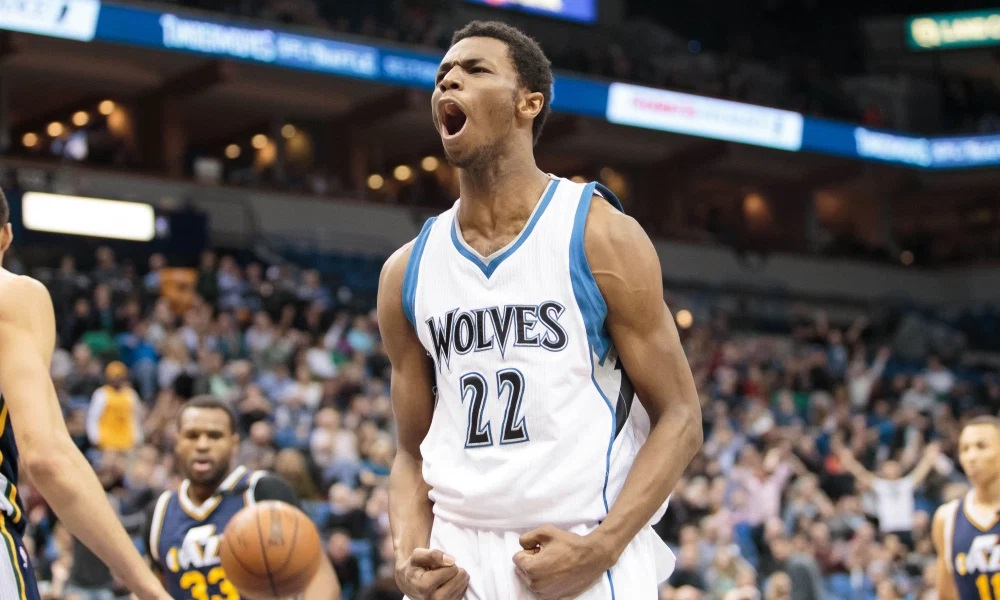

New Dashboards
Coronavirus dashboard data source issues have been fixed. I have also create some new ones related to global warming and carbon emissions. The global warming one is a simple but effective template to visualize information quickly. The carbon emission dashboard uses a two colour theme. Keep in mind that since these two dashboards are hosted on free Heroku servers, they do not load quickly like the COVID - 19 tracker. Expect around 10 - 25 seconds of loading for these. I am also in the process of moving some of my dashboards to AWS so maybe they will be faster there.
Website Update
Just finished redoing the site using bootstrap. Also trying to find a NBA API to use.
On the topic of basketball, I have also selected the next topic for another article. While he is not a Canadian, I feel like I can make an exception for him. As one of the most popular athletes in Toronto, despite no longer playing there, Demar DeRozan. In particular, I want to look into his abilties compared to some of the greats from the previous era (RIP Kobe). I want to compare and see how effective he would have been if he had been born say, 10 years earlier. My initial thoughts are that DeRozan will compare favorably but we will find out.
Just Another Coronavirus Dashboard
One of the few positives of the pandemic is that there has been an abundance of really cool dashboards circling around. Since I have been playing with plotly dash for a little while I decided to try to make my own. You can check it out here. Sources and motives can be found in my projects page.
Andrew Wiggins - The First Maple Jordan
Updated projects page and uploaded my first article! This article takes a look at an individual who has been called Maple Jordan in the past, Andrew Wiggins. Most a fairly light summary of his shot tendencies, and where Wiggins is most efficient. Also compares how Wiggins matches up to some of the best finishers (non centers) in the league. You can find the article here.
Currently some of the dashboards are located on free Heroku servers. As a result they may take 10 - 25 seconds to load.